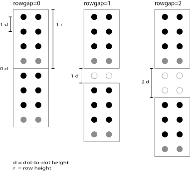

PEF 1.0 - Portable Embosser Format
Public draft, revised 12 September 2011
- This version:
- https://braillespecs.github.io/pef/pef-specification.html
- Author:
- Joel Håkansson
- Contributors:
- Sean Brooks, Linus Ericson, Markus Gylling, Stefan Hofstetter, Robert
Jaquiss, Piotr Kiernicki, Fredrik Larsson, Rob Longstaff, Björn Nyqvist,
Stephen Phippen, Matthias Ragaz, Per Sennels, Richard Stones, Jennifer
Sutton, Björn Westling, Markus Wildi
Abstract
This document specifies the Portable Embosser Format (PEF), a data format
for representing braille books. PEF is an XML 1.0
application.
Status of this
Document
This document is a public draft.
Table of
Contents
Introduction
This section is informative.
What is PEF?
The Portable Embosser Format (PEF) is a document type that represents
braille pages in digital form, accurately and unambiguously; regardless of
language, location, embosser settings, braille code and computer environment.
It can be used for braille embossing and archiving anywhere in the world, no
matter where nor how it was produced. PEF allows new features to be added, such
as ink overlay or tactile graphics, thus enabling a completely automated
reproduction of advanced braille books.
Why is PEF Necessary?
PEF brings a number of things to braille production:
- Metadata. A PEF file provides information about its contents.
- A braille publishing standard. Since the PEF file format is defined in a
publicly available standard, there is never any doubt about how to
interpret or use the contents of a PEF file.
- A proper file format for braille. Having a proper file format means,
among other things, that file integrity can be tested to detect errors.
- World wide file sharing. Because PEF is specified and the braille
representation unambiguous, it can be shared with anyone in the world. For
example, braille music is very expensive to produce, but the braille code
used in musical notation is the same all over the world. With PEF, this
material can be shared in electronic form with anyone.
- Archive safety. Because PEF is specified and the braille representation
unambiguous, PEF documents can be safely archived for the future.
- Economy. Publishing and republishing of braille can be achieved quickly
and easily because files can be shared across the world, without worrying
about embosser settings. Users can become publishers and providers can
share resources and reduce costs.
What is Unicode?
Unicode provides a unique number for every character, regardless of
platform, software and language.
Computers store letters and other characters by assigning a number for each
one. Before Unicode was invented, there were hundreds of different encoding
systems for assigning these numbers. No single encoding could contain enough
characters: for example, the European Union alone requires several different
encodings to cover all its languages. Even for a single language like English
no single encoding was adequate for all the letters, punctuation, and technical
symbols in common use.
These encoding systems also conflict with one another. That is, two
encodings can use the same number for two different characters, or use
different numbers for the same character. Any given computer (especially
servers) needs to support many different encodings; yet whenever data is passed
between different encodings or platforms, that data always runs the risk of
corruption. [Unicode]
Why Use Unicode Braille Patterns?
PEF uses Unicode braille patterns rather than ASCII characters for several
reasons:
- Unicode and the Unicode braille patterns are locale independent. The
translation between ASCII characters and braille patterns isn’t. For
example, common characters like .?()+$% and # render different braille
patterns depending on locale. It is impossible to send an ASCII file for
embossing on an embosser configured for another locale. This is a major
issue for the non English speaking part of the world and it is the main
reason for using Unicode braille patterns instead of ASCII characters.
- Unicode braille patterns are unambiguous. Even if there were only one
braille pattern for each ASCII character, the interpretation would still be
ambiguous since ASCII braille - though depending on an alternate
interpretation of ASCII characters - provides no means of differentiating
ASCII braille from regular ASCII.
- The Unicode braille patterns are part of the Unicode standard, a global
and widely accepted standard. ASCII braille does not follow any known
standard.
- Translating Unicode braille patterns into any ASCII based braille format
is a simple one-to-one-mapping. However, the opposite is not true, unless
you know beforehand which locale it was produced for.
What is XML?
The Extensible Markup Language (XML) describes a class of data objects
called XML documents. XML was conceived as a means of retaining the power and
flexibility of SGML, while reducing its complexity [XML].
Why Use XML?
PEF uses XML because:
- It allows metadata. A PEF file can contain information about its
contents.
- It is extensible. New features can easily be introduced in future
versions, such as ink overlay or tactile graphics. Third party custom
features such as heading or paragraph markers are also possible via
namespace additions.
- XML tools are widely available and easy to use. No parsing or validating
tools need to be developed to implement PEF.
- It allows structural markup. Following XML convention, PEF uses markup
rather than control characters for structural elements such as rows and
pages. Structural markup simplifies processing in an XML environment and
ensures compatibility with future extensions.
On Hardware Limitations
Typically, embossers have very limited RAM and processing power, and might
not be able to read and interpret PEF files natively. However, the PEF
specification does not require that PEF support is implemented in the
embosser's hardware. Alternatively, support for PEF can be added to the
embosser print driver or other bundled software.
Scope Limitations
PEF is an delivery and archive format. There are many issues in braille
production that PEF neither can nor should solve. For example, issues
involving:
- authoring
- dynamic rendering, e.g. reflowing or reformatting
- repurposing. While many XML based formats can be used to create other XML
formats, PEF is not intended to be one of these
- reverse translation. Reverse translation is a special case of repurposing
sometimes used in braille production where a text is recreated from a
braille file to facilitate editing by a sighted person
Further Development
Currently, there is very little common ground between embossers. Many
aspects of page layout were impossible to include as requirements in this
version of PEF because it would have limited the range of potentially
compatible embossers too much. However, future versions will be more demanding
since page layout is an important part of PEF.
Definitions
This section is normative.
The following terms and definitions are used within this document.
Terminology
The key words "MUST", "MUST NOT", "REQUIRED", "SHALL", "SHALL NOT", SHOULD",
"SHOULD NOT", "RECOMMENDED", "MAY", and "OPTIONAL" in this document are to be
interpreted as described in RFC 2119.
General Terms
- 6-dot braille
- 6-dot braille is a writing system that only utilizes braille patterns
consisting of a combination of the uppermost six dots. See also
Unicode character range 2800-283F.
- 8-dot braille
- 8-dot braille is a writing system that utilizes all possible braille
patterns. See also Unicode character range 2800-28FF.
- Braille cell
- A braille cell is a single braille unit or character. At least one
braille cell is needed to form a single print character.
- Braille pattern
- A braille pattern is a combination of dots that make up a braille
cell.
- Document
- A document is a stream of data that, after being combined with any
other streams it references, is structured such that it holds information
contained within elements, that are organized
as defined in an associated schema. See Document Conformance for more information.
- Facilities
- Facilities are elements, attributes, and the semantics associated with those
elements and attributes.
- Implementation
- See User agent.
- Parsing
- Parsing is the act whereby a document is
read, and the information contained within the document is filtered into the context of the elements in which the information is structured.
- Rendering
- See definition in
Device Independence Glossary document [DI
Glossary].
- Schema
- A schema is a collection of markup rules that, as a collection, define
the legal structure, elements, and attributes available for use in an XML document that
complies to the defined schema.
- Unicode character range 2800-283F
- The range of 6-dot braille patterns in Unicode. See also 6-dot
braille.
- Unicode character range 2800-28FF
- The complete range of braille patterns in Unicode; the range of 8-dot
braille patterns in Unicode. See also 8-dot braille.
- Unicode character range 2840-28FF
- The range of braille patterns in Unicode that are unique to 8-dot
braille, i.e. any 8-dot braille pattern that isn't in the 6-dot braille
pattern subset.
- User agent
- See definition in
Device Independence Glossary document [DI
Glossary].
- Validation
- Validation is a process whereby documents are
verified against the associated schema,
ensuring that the structure, use of elements,
and use of attributes are consistent with the
definitions in the schema.
- Well-formed
- A document is well-formed when it is
structured according to the rules defined in Section 2.1 of
the XML 1.0 Recommendation [XML].
Axes and Node Types
The use of axes in this document (such as "child", "parent",
"ancestor", "descendant") is consistent with Section 2.2 of the XPath 1.0
Recommendation [XPath].
The use of node types in this document (such as "root",
"element", "text", "attribute") is consistent with Section 5 of the XPath 1.0
Recommendation [XPath].
Relationship to Other Specifications
This specification is based on the specific versions of the standards and
specifications referenced herein, which are used as defined except as noted in
this document. Any refinement or replacement of a referenced specification by a
newer or different version is not directly applicable to this standard.
Conformance to this standard is based on the versions of the standards and
specifications in effect at the time of writing.
Definition of PEF 1.0
This section is normative.
A conforming PEF document is an XML document that requires only the
facilities described as mandatory in this specification. Such a document must
meet all of the following criteria:
- It must conform to the constraints associated with the namespaces used in
it.
- The local part of the root element of the document must be
pef.
- The root element of the document must be in the PEF namespace.
- The start tag of the root element of the document must contain an xmlns
declaration for the PEF namespace [XMLNS]. The
namespace URI for PEF 1.0 is defined to be
http://www.daisy.org/ns/2008/pef. An example root element might
look like: <pef version="2008-1"
xmlns="http://www.daisy.org/ns/2008/pef">
- It must be encoded with UTF-8 or UTF-16 encoding as per [Unicode].
A conforming user agent must meet all of the following criteria:
- The user agent must support UTF-8 encoding as per [Unicode].
- The user agent must support Unicode character range 2800-283F.
- When the user agent claims to support facilities defined within this
specification or required by this specification through normative
reference, it must do so in ways consistent with the facilities'
definition.
A conforming user agent is recommended to meet the following criteria:
- The user agent is recommended to support Unicode character range
2840-28FF.
- The user agent is recommended to support UTF-16 encoding.
Processing Unknown Content
Since the PEF rule set allows content for which this specification has no
definition, user agents must be prepared to process content whose semantics are
unknown (apart from node type). The following applies when a user agent
processes unknown content:
- If the unknown contents is an element, all node children, except text
node children, must be processed. Using XPath in the context of the unknown
element, this can be expressed as:
node()[not(self::text())]
For example, a user agent should read
...
<pef:page xmlns:pef="http://www.daisy.org/ns/2008/pef">
<ext:group xmlns:ext="http://www.example.org">
<ext:annotation>This is a row group annotation</ext:annotation>
<pef:row>⠀⠁</pef:row>
<pef:row>⠀⠂</pef:row>
<pef:row>⠀⠃</pef:row>
</ext:group>
</pef:page>
...
as
...
<pef:page xmlns:pef="http://www.daisy.org/ns/2008/pef">
<pef:row>⠀⠁</pef:row>
<pef:row>⠀⠂</pef:row>
<pef:row>⠀⠃</pef:row>
</pef:page>
...
Note that the annotation text was not read since it is a text node child
to an unknown element.
- If an attribute or its value is unknown, the entire attribute
specification (i.e., the attribute and its value) must be ignored.
Rendering Definitions
- Dot-to-dot height
- The vertical distance between dot centers within a Braille cell. See
also Figure 1.
- Page alignment
- Pages align to the top-left corner of the embosseble area of a
sheet.
- Row height
- Row height, excluding row gap, is four times the dot-to-dot height,
regardless of whether the user agent supports Unicode character range
2840-28FF or not. See also Figure 1.
- Row gap
- Row gap is rendered below the row it is associated with. Row gap is
expressed as an integer multiple of the dot-to-dot height. See also
Figure 1.
- Sections
- A section always starts on a blank sheet of paper. The reason for this
is that a change from duplex to simplex or vice-versa can't be accurately
effectuated unless the sheet is blank.

Figure 1. Schematic illustration of dot-to-dot
height, row height and row gap.
Attributes
The value specified by the attributes cols, rows, rowgap and duplex applies
to the element where it is specified, and to its descendants unless overridden
by another instance of these attributes.
If the definition below should conflict with the Relax NG
rule set, the latter takes precedence.
- cols
- Description: Defines the page width expressed as an integer multiple of
the braille cell width.
- Occurence: Mandatory on volume elements and optional on section
elements.
Value: A positive integer.
- duplex
- Description: Defines whether or not both sides of the sheet should be
embossed.
- Occurence: Mandatory on volume elements and optional on section
elements.
Value: The string "true" or "false".
- rowgap
- Description: Defines the size of the gap following a row.
- Occurence: Mandatory on volume elements and optional on section, page
and row elements.
Value: A non negative integer.
- rows
- Description: Defines the page height expressed as an integer multiple
of row height.
- Occurence: Mandatory on volume elements and optional on section
elements.
Value: A positive integer.
- version
- Description: Defines the pef version.
Occurence: Mandatory on pef elements.
Value: The string "2008-1".
The PEF namespace may be used with other XML namespaces as per [XMLNS].
Internet Media Type and File Extension
The Internet media type for PEF is "application/x-pef+xml".
It is recommended that PEF files have the extension ".pef" (all lowercase)
on all platforms.
Elements
This section is informative.
Elements are listed in document order. In this listing, unprefixed elements
are in the PEF namespace and the prefix dc is used on elements in
the [Dublin Core] namespace.
pef
- Description
- The pef element is the root element of a PEF document.
- Child elements
- head (mandatory)
- body (mandatory)
head
- Description
- The head element contains header information, such as metadata.
- Parent element
- pef
- Child elements
- meta (mandatory)
- Description
- The meta element contains metadata information.
- Parent element
- head
- Child elements
- dc:format (mandatory)
- dc:identifier (mandatory)
- dc:title (optional)
- dc:creator (zero or more)
- dc:subject (zero or more)
- dc:description (optional)
- dc:publisher (zero or more)
- dc:contributor (zero or more)
- dc:date (optional)
- dc:type (zero or more)
- dc:source (zero or more)
- dc:language (zero or more)
- dc:relation (zero or more)
- dc:coverage (zero or more)
- dc:rights (zero or more)
dc:format
- Description
- The file format, physical medium, or dimensions of the resource.
- Parent element
- meta
- Value
- The string "application/x-pef+xml".
body
- Description
- The body element contains the body of the document, its contents.
- Parent element
- pef
- Child elements
- volume (at least one)
volume
- Description
- The volume element defines a volume of braille, i.e. a range of pages
that, once embossed, are to be joined together to form a physical
unit.
- Parent element
- body
- Child elements
- section (at least one)
section
- Description
- The section element defines a range of pages in a volume that share
some common property, such as duplex or dimensions settings.
- Parent element
- volume
- Child elements
- page (at least one)
page
- Description
- The page element defines a braille page.
- Parent element
- section
- Child elements
- row (zero or more)
row
- Description
- The row element defines a row of braille.
- Parent element
- page
- Value
- A string containing Unicode braille patterns.
Metadata Extension
This section is informative.
PEF includes Dublin Core metadata elements for convenience, but the metadata
section can easily be extended to include other elements. Here's an example of
how to extend the metadata section.
<head>
<meta xmlns:dc="http://purl.org/dc/elements/1.1/" xmlns:org="http://www.example.org">
<dc:title>Butterfly Test Pattern</dc:title>
<dc:creator>Joel Håkansson</dc:creator>
<dc:date>2008-09-26</dc:date>
<dc:format>application/x-pef+xml</dc:format>
<dc:identifier>org.pef.00001</dc:identifier>
<dc:description>
A PEF 1.0 example. The file contains a test pattern that is symmetric
along the horizontal and vertical axis and uses all 6-dot patterns. In most
cases, a faulty conversion will render an asymmetrical pattern.
</dc:description>
<org:paper-size value="A4"/>
<org:grade value="1"/>
<org:margin-top value="5cm"/>
<org:margin-left value="2cm"/>
<org:binding content="coil"/>
</meta>
</head>
Error Handling
This section is normative.
If a user agent encounters a document that it is unable to process the user
agent must inform the user and abort. However, because of embosser limitations,
fallback behaviour is acceptable under the following circumstances:
- The user agent cannot set row gap to the specified value
- The user agent may choose the closest possible smaller or larger value
that it supports, as long as no exception is raised as a consequence. The
user agent may prompt the user before continuing.
- The user agent cannot set specified duplex value
- The user agent may choose a value that it supports and continue
processing. The user agent may prompt the user before continuing.
- The user agent cannot produce volumes
- The user agent may disregard volume information and continue
processing. The user agent may prompt the user before continuing.
- The user agent cannot process braille patterns in range 2840-28FF
- The user agent may prompt the user for one of the following actions:
- ignore unsupported braille patterns (rows will be shortened)
- replace unsupported braille patterns with a fixed replacement, e.g.
2800 (empty cell) or 283F (full 6-dot cell)
- trim unsupported braille patterns by ignoring dots 7 and 8, e.g. by
bit masking the code point with 283F.
- The paper width is at least one full cell wider than the specified
width
- The user agent may provide rendering options or use a preferred
action.
- The paper height differs from the specified height
- The user agent may provide rendering options or use a preferred action,
as long as each page's content can be rendered within the paper
height.
A user agent that implements fallback behaviour must inform the user of the
rendering implications.
Rule Sets
The rule sets mentioned below are included in the zip
file for this specification. Users looking for local copies of the rule
sets to work with should download and use this archive rather than using the
specific references below.
This section is normative.
The Relax NG rule set "validation/pef-2008-1.rng" forms a
normative part of this specification.
DTD Rule Set
This section is informative.
The DTD rule set "validation/pef-2008-1.dtd" forms an
informative part of this specification. It is provided for compatibility
reasons but do not include all the normative restrictions and features enforced
by the Relax NG rule set.
The Dublin Core specification is maintained by [Dublin Core].
References
Normative References
This section is normative.
- [DI
Glossary]
- "Glossary of
Terms for Device Independence", Rhys Lewis, 18 January 2005.
Latest version available at:
http://www.w3.org/TR/di-gloss/
- [Dublin
Core]
- "Dublin Core
Metadata Element Set, Version 1.1"
Latest version
available at: http://dublincore.org/documents/dces/
- [RFC2119]
- "RFC2119: Key words for
use in RFCs to Indicate Requirement Levels", S. Bradner, March
1997.
Available at: http://www.ietf.org/rfc/rfc2119.txt
- [Unicode]
- "Unicode
Standard, Version 5.1.0", The Unicode Consortium. The Unicode
Standard, Version 5.1.0, defined by: The Unicode Standard, Version 5.0
(Boston, MA, Addison-Wesley, 2007. ISBN 0-321-48091-0), as amended by
Unicode 5.1.0.
Latest version
available at: http://www.unicode.org/versions/latest/
- [XML]
- "Extensible Markup
Language (XML) 1.0 (Fourth Edition)", T. Bray, J. Paoli, C. M.
Sperberg-McQueen, E. Maler, F. Yergeau, 29 September 2006.
Latest version available at:
http://www.w3.org/TR/xml
- [XMLNS]
- "Namespaces
in XML 1.0 (Second Edition)", T. Bray, D. Hollander, A. Layman, R.
Tobin, 16 August 2006.
Latest version available at:
http://www.w3.org/TR/xml-names
- [XPath]
- "XML Path
Language (XPath) Version (1.0)", J. Clark, S. DeRose, 16 November
1999.
Latest version available at:
http://www.w3.org/TR/xpath
This section is informative.
Accessibility note: The Unicode braille patterns in the files below may not
display with JAWS or braille display.
- [Example PEF document: Om våren]
- "examples/poem.pef". A poem by the
Swedish poet Nils Ferlin called "Om våren" (the text is in Swedish).
- [Example PEF document: Butterfly Test Pattern]
- "examples/butterfly.pef". A test
pattern that uses all 6-dot braille patterns, rendering a butterfly
shape.
- [Example PEF document: 6-dot Chart]
- "examples/6-dot-chart.pef". All
6-dot patterns in Unicode order with spaces in between.
- [Example PEF document: 8-dot Chart]
- "examples/8-dot-chart.pef". All
braille patterns in Unicode order with spaces in between.
- [Example PEF document: Extending PEF]
- "examples/extended.pef".
Demonstrates how a PEF-file can be extended.